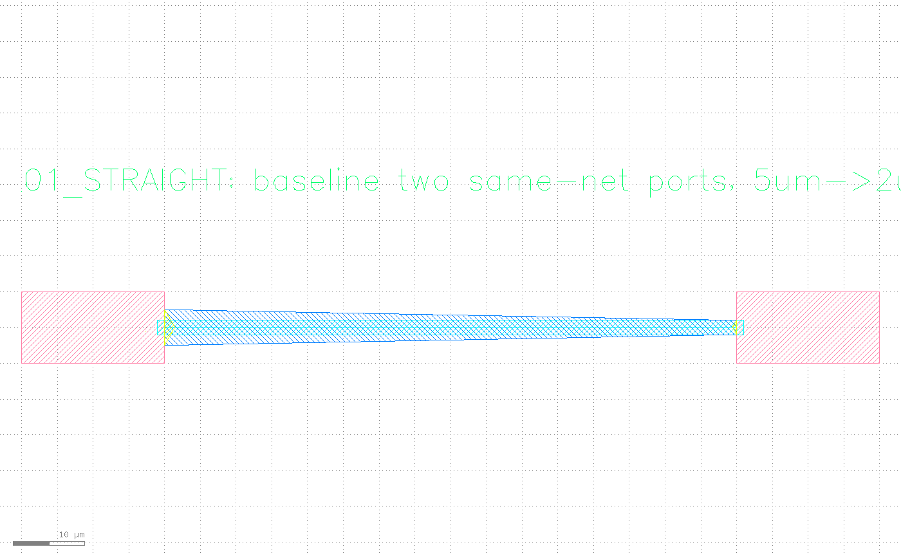
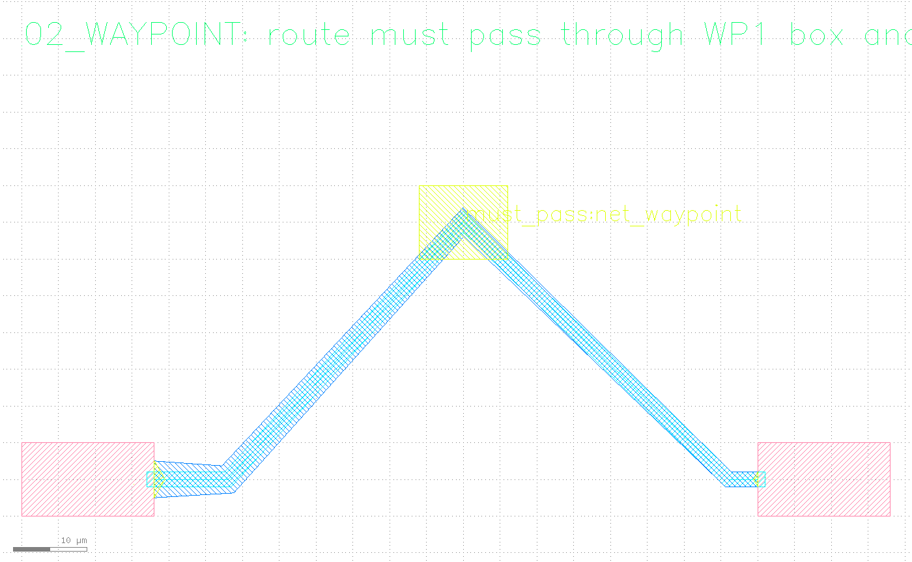
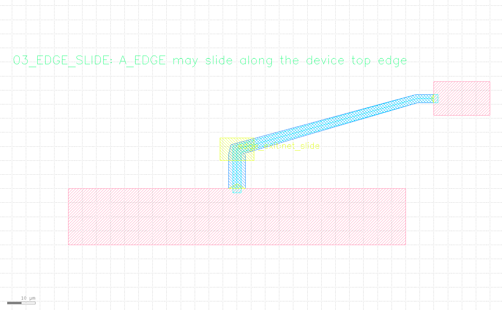
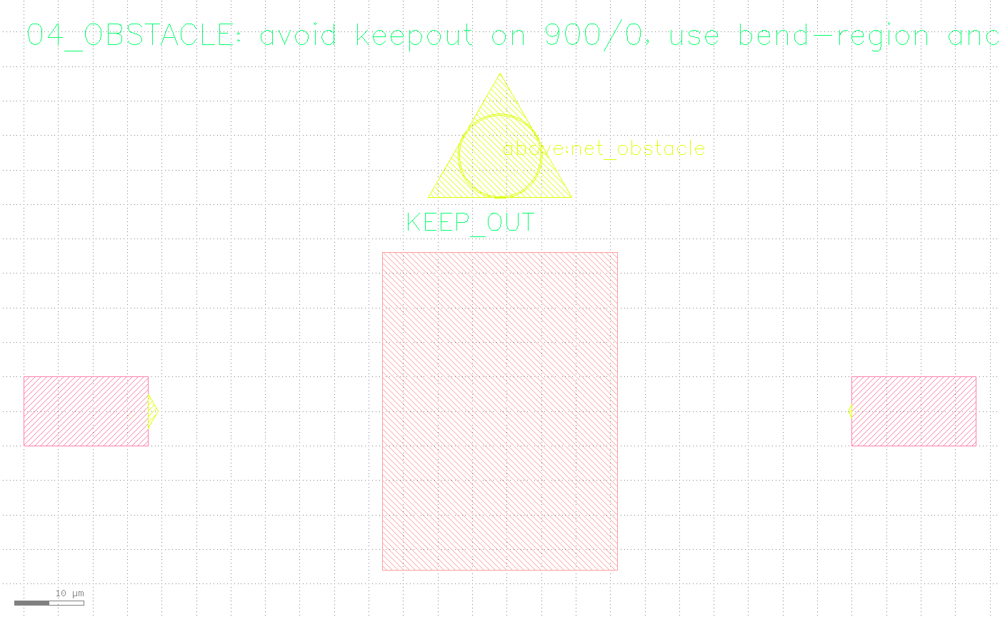
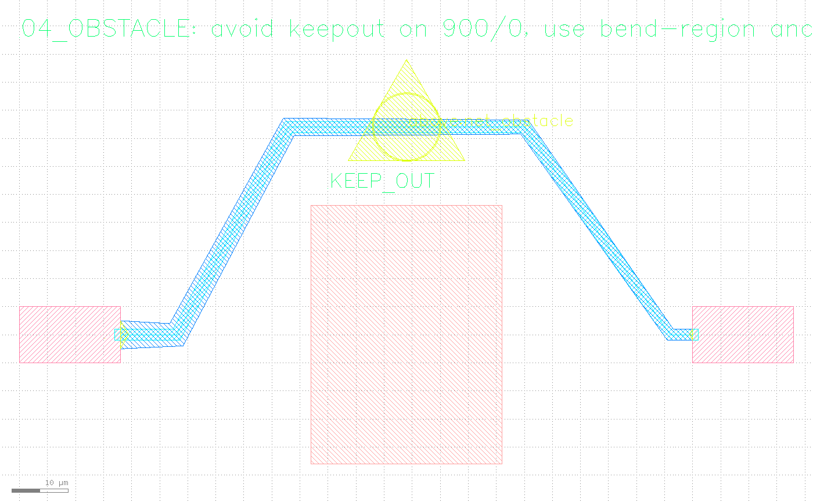
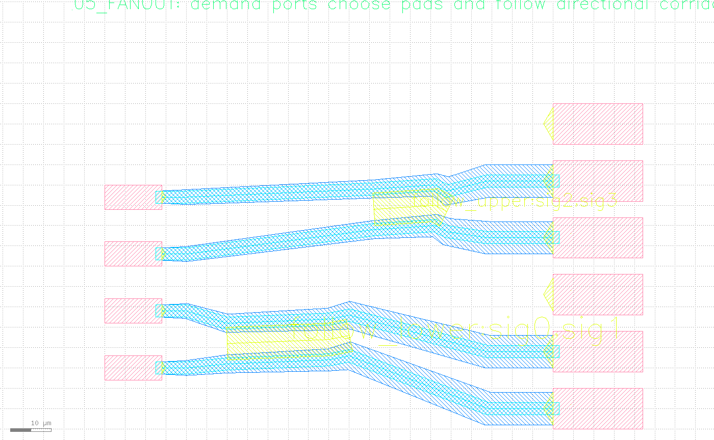

What this is
five_routers.py builds five small scenarios (each with its own device/pad geometry, Ports, Anchors, and one with a keepout), routes each, then verifies each. The honest part: the routing call is identical across all five -- first route_with_port_launch_stubs draws a reference centerline guide (for people to check, not part of verification), then route_tapered plans the actual tapered polygon route and commit_tapered_routes writes it in one batched call. What differs between scenarios is only what Phase 1 feeds the router when it builds the scene: whether there's an Anchor, what kind it is, whether a port can slide, what the obstacle bbox is. No scenario ever switches to "a different router."
Prerequisites
- Install klink:
pip install klayout-klink. - KLayout running with the klink plugin loaded (RPC port defaults to
8765). - You need a live KLayout session -- all five scenarios are RPC calls that write directly into the live layout, not an offline synthesis:
python example_template/routing/five_routers.py(--port <session-port>picks the session, default 8765).
FIVE_ROUTERS_SCRATCH is only a placeholder scaffold cell); the five real scenario cells are rebuilt inside it. When it's done it closes that tab and restores whatever tab was current before -- it never touches your hand-built working tab.Layers involved
| Layer | Purpose |
|---|---|
999/99 | klink's reserved Port marker layer |
999/1 | klink's reserved Anchor marker layer |
1/0 | M1_DEVICE_OR_PAD: each scenario's own device/pad geometry |
900/0 | KLINK_ROUTE_KEEPOUT: the keepout obstacle scenario ④ must avoid |
996/99 | KLINK_EXPECTED_ROUTE_GUIDE: the reference centerline route_with_port_launch_stubs draws, for people to check, not part of verification |
11/0 | KLINK_TAPERED_RESULT: the tapered route polygons route_tapered → commit_tapered_routes actually writes |
997/99 | KLINK_EXAMPLE_LABELS: the scenario caption at the top of each cell |
Every scenario's routing call is the same two-step pattern:
g = route_with_port_launch_stubs(p0, p1, inner_points or None)
guide(c, cell, g["points_um"], width=g["width_um"]) # 996/99 reference line, for people only
t = route_tapered(p0, p1, inner_points or None, strategy="uniform", corner_style="miter")
write = commit_tapered_routes(c, cell, [t], route_layer="11/0", clear=False) # the real tapered route1Straight baseline
The simplest scenario: two same-net ports, no Anchors at all. Port A sits at [20, 5], orientation 0°, 5 µm wide; port B sits at [100, 5], orientation 180°, 2 µm wide -- the route tapers smoothly from 5 µm down to 2 µm with not a single bend along the way.
p0 = port(c, cell, "A", [20, 5], 0, net="net_straight", width=5.0)
p1 = port(c, cell, "B", [100, 5], 180, net="net_straight", width=2.0)
# inner_points is empty -> route_tapered(p0, p1, None, ...)
2Forced waypoint
Port positions are unchanged (at 18 µm and 100 µm), but this time a waypoint_region Anchor called WP1 sits in the middle, centered at [60, 40], 12×10 µm -- the route must pass through that box instead of taking the shortest straight line between the two ports. klink turns it into a waypoint fed to route_tapered's inner_points.
anchor(c, cell, "WP1", [60, 40], "waypoint_region", net="net_waypoint",
label="must_pass", width=12, height=10)
# requests: inner_points=[[60, 40]]
WP1 waypoint_region Anchor (the rectangle marker in the picture), passes through it, then bends again toward the far port -- not the shortest line between the two ports.3Edge-sliding port
Port A_EDGE has access_mode="edge" and slide_allowed=True, plus a slide_edge parameter -- an edge segment in database units (the current default is 1 nm), "20000,40000,140000,40000", telling the router this port isn't pinned to one point: it can slide anywhere along the device's top edge (the 20–140 µm span) and the router picks whichever launch point works best for the route. The other end, B, is an ordinary port; an EXIT waypoint_region Anchor in between forces the trace to clear the top of the device before bending toward B.
# Stored in DBU because the current default database unit is 1 nm; this
# example intentionally documents the router-facing slide edge, so it's
# safe to copy verbatim.
slide_edge = "20000,40000,140000,40000"
p0 = port(c, cell, "A_EDGE", [80, 40], 90, net="net_slide", width=6.0,
access_mode="edge", slide_allowed=True, slide_edge=slide_edge)
p1 = port(c, cell, "B", [150, 72], 180, net="net_slide", width=3.0)
A_EDGE is not pinned to a fixed coordinate -- the router picked a launch point along the device's top edge, passed through the EXIT waypoint_region, then bent toward B.4Obstacle detour
A keepout box [52, -18, 86, 28] sits on layer 900/0 (labeled KEEP_OUT). The route must clear it entirely -- not just graze past it. Anchor BEND_ABOVE is a bend_region, priority=10, centered right above the obstacle at [69, 42] -- but passing only through that one waypoint isn't enough: a single point only guarantees the route passes through it, not that the whole route stays clear of the obstacle everywhere else. So the script gives route_tapered two inner_points ([48, 42] and [90, 42]), so the route stays above the obstacle for its entire span instead of clearing only at the anchor and cutting back into the obstacle elsewhere.
keepout_bbox = [52.0, -18.0, 86.0, 28.0]
box(c, cell, keepout_bbox, layer=KEEPOUT)
anchor(c, cell, "BEND_ABOVE", [69, 42], "bend_region", net="net_obstacle",
label="above", radius=6, priority=10)
# two waypoints so the route clears the obstacle everywhere, not just at
# the anchor's center
requests = [{"source": p0, "target": p1, "inner_points": [[48, 42], [90, 42]]}]
KEEP_OUT obstacle on layer 900/0, and the BEND_ABOVE bend_region Anchor sitting right above it -- everything the router has to work around, before any trace exists.
KEEP_OUT for its whole span -- exactly what Phase 3's obstacle_hit_count verifies as zero.5Demand-port fanout
Four demand ports IN0..IN3 (3 µm wide, net=sig0..sig3) each need to connect to one of six candidate pads PAD0..PAD5 (8 µm wide, port_type="candidate_sink", net="") -- every trace widens from 3 µm all the way to 8 µm. The two signal groups each follow a named corridor Anchor (LOWER_CORRIDOR carries net="sig0,sig1", UPPER_CORRIDOR carries net="sig2,sig3"), so the two routes in a group travel the same corridor instead of going their separate ways. The two routes sharing one corridor still need an explicit lane offset to avoid touching each other: a comment in the script records a real lesson learned -- a ±3 µm lane split wasn't enough, because route_tapered's mid-corridor width already exceeds 6 µm, so ±3 µm lanes overlapped; ±5 µm is the smallest split this geometry clears with zero sibling_overlap_count.
anchor(c, cell, "LOWER_CORRIDOR", [45, 17], "corridor", net="sig0,sig1",
label="follow_lower", width=8.0, path_points="-15,-1;10,0;15,1")
anchor(c, cell, "UPPER_CORRIDOR", [75, 49.5], "corridor", net="sig2,sig3",
label="follow_upper", width=8.0, path_points="-9,-0.5;6,0.5;9,-1")
# +-3um lanes weren't enough (route_tapered's mid-corridor width already
# exceeds 6um, so they overlapped); +-5um is the smallest split this
# geometry clears with zero sibling_overlap_count
assignments = [
(10, 0, lower_corridor, -5.0),
(24, 14, lower_corridor, 5.0),
(38, 42, upper_corridor, -5.0),
(52, 56, upper_corridor, 5.0),
]
Verify, don't just look
As core concepts says: screenshots are for people, not proof of done. Phase 3 of five_routers.py does the same three checks for every scenario: does the polygon count commit_tapered_routes actually wrote match the number of requests this scenario expected (route_count); check every trace against the obstacle bboxes (obstacle_hit_count); check every trace against every other trace in the same scenario (sibling_overlap_count) -- only when all three check out does ok become True. The script prints one line per scenario, in a fixed format:
%-22s ok=%-5s route_count=%d/%d obstacle_hit_count=%d sibling_overlap_count=%dWhen all five scenarios are clean, it looks like this:
ROUTE_01_STRAIGHT ok=True route_count=1/1 obstacle_hit_count=0 sibling_overlap_count=0
ROUTE_02_WAYPOINT ok=True route_count=1/1 obstacle_hit_count=0 sibling_overlap_count=0
ROUTE_03_EDGE_SLIDE ok=True route_count=1/1 obstacle_hit_count=0 sibling_overlap_count=0
ROUTE_04_OBSTACLE ok=True route_count=1/1 obstacle_hit_count=0 sibling_overlap_count=0
ROUTE_05_FANOUT ok=True route_count=4/4 obstacle_hit_count=0 sibling_overlap_count=0
all five scenarios routed cleanlyIf any scenario's obstacle_hit_count or sibling_overlap_count is nonzero, or the written polygon count doesn't match the expected request count, that scenario's ok is False -- the script lists which scenarios failed and why, and exits nonzero. It is never reported as "routed" on a false verdict.
Next steps
Swap the scenario data in example_template/routing/five_routers.py for your own port coordinates, widths, and obstacle declarations, and rerun until all five lines read ok=True. To work against the MCP tools directly, the full 9-tool routing parameter list is in MCP reference · Routing backends, and the complete Port/Anchor field reference is in MCP reference · Port, Anchor & Region. The "mark Port/Anchor intent, then let a routing algorithm complete the wiring" idea here is the same geometry-first loop as stages ⑤–⑥ of the Hall bar device tutorial, just with five different input combinations; the corridor + lane idea behind the fanout scenario shows up at larger scale in the neural electrode array harness tutorial.